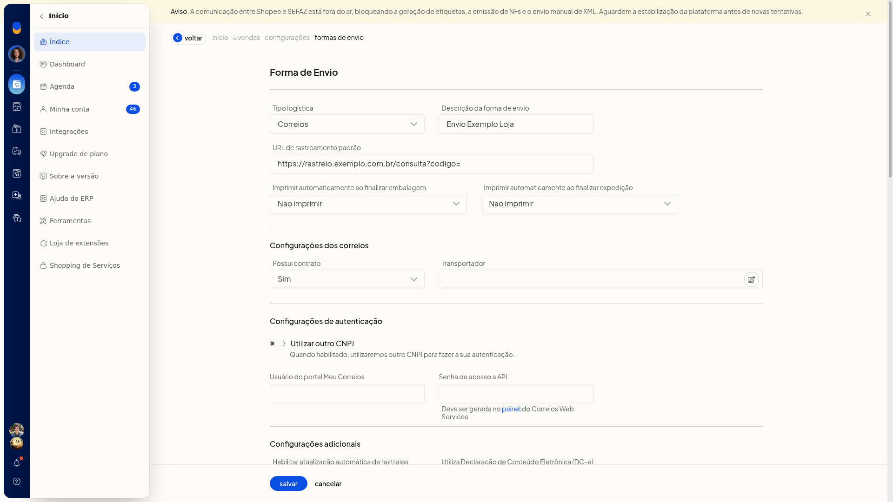
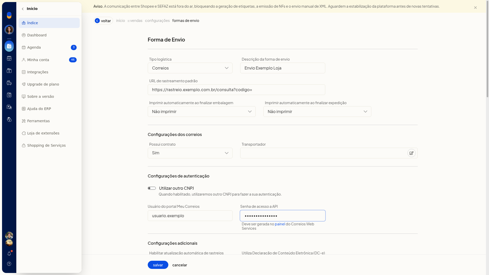
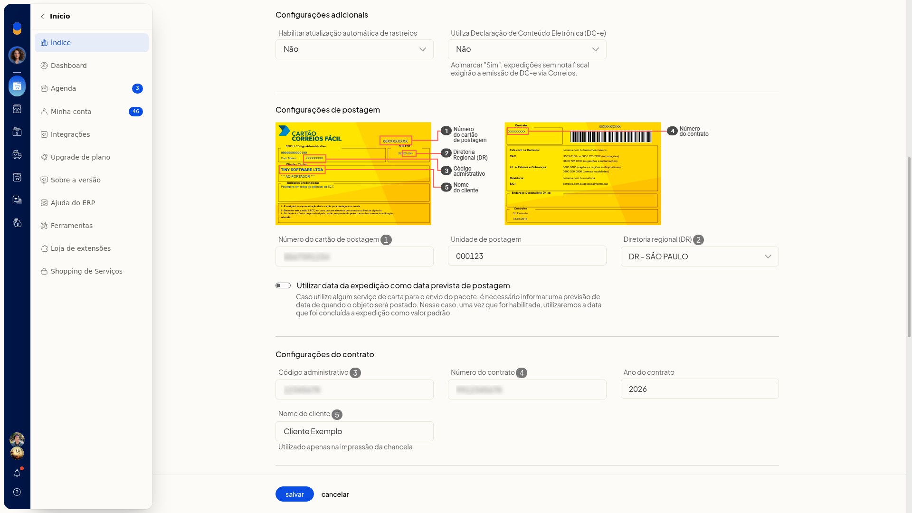
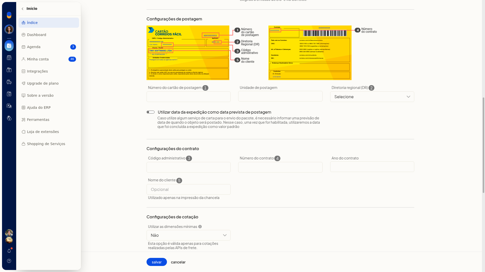
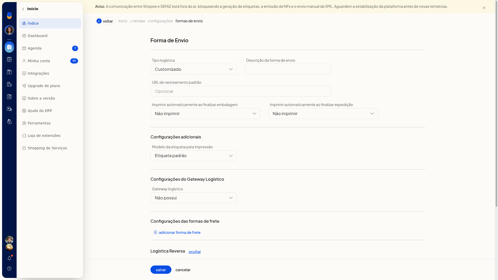

Correios no ERP (inclui logística reversa)
No ERP da Olist, a forma de envio Correios reúne contrato, autenticação, cotação e logística reversa para expedir pedidos e cotar o frete.
Você inclui essa forma em Configurações > Configurações ERP > Vendas > Formas de envio e informa os dados do contrato, as regras de cotação e as credenciais da logística reversa.
Pré-requisitos
- Se a opção não aparecer para você, peça acesso ao administrador da conta.
- A Senha de acesso a API precisa ser gerada no painel do Correios Web Services.
- A logística reversa exige identificação e senha especiais, diferentes dos dados do Sigep WEB e das credenciais da interface de logística reversa.
Importante
- Com Utilizar outro CNPJ marcado, a autenticação usa outro CNPJ.
- Com Utiliza DC-e em Sim, expedições sem nota fiscal exigem DC-e via Correios.
- Utilizar as dimensões mínimas vale apenas para cotações feitas pelas APIs de frete.
- Nome do cliente é usado apenas na impressão da chancela.
- O Prazo de postagem (Envio convencional) aceita até 90 dias.
- O Prazo de postagem (Logística reversa) aceita um número inteiro de 1 a 90. A validade da etiqueta definida pelos Correios é de até 90 dias.
- Em Gateway logístico, a lista traz Não possui e os gateways já configurados na conta. A tela não cria o gateway.
Instruções
-
Acesse Configurações > Configurações ERP > Vendas > Formas de envio.
-
Clique em Incluir forma de envio.
-
Em Tipo logística, selecione Correios.

-
Informe a Descrição da forma de envio. A URL de rastreamento padrão é opcional.
-
Em Imprimir automaticamente ao finalizar embalagem e Imprimir automaticamente ao finalizar expedição, selecione Não imprimir, DANFE ou Etiqueta de envio.
-
Em Modelo da etiqueta para impressão, selecione Etiqueta padrão ou Minha transportadora.
-
Em Gateway logístico, selecione Não possui ou um gateway já configurado na conta.
Contrato e autenticação
- Em Possui contrato, selecione Sim ou Não.
- Informe o Transportador já cadastrado.
- Marque Utilizar outro CNPJ quando a autenticação deve usar outro CNPJ. Preencha o CNPJ no formato 00.000.000/0001-91.

- Preencha Usuário do portal Meu Correios e Senha de acesso a API.

- Em Habilitar atualização automática de rastreios, selecione Não ou Sim. Essa opção só fica disponível quando a conta tem atualização de status de envio da venda.
- Em Utiliza DC-e, selecione Sim ou Não.
- Informe Número do cartão de postagem, Unidade de postagem e Diretoria regional (DR).
- Marque Utilizar data da expedição como data prevista de postagem para usar a data da expedição.
- Preencha Código administrativo, Número do contrato, Ano do contrato e Nome do cliente.

Cotação
- Em Utilizar as dimensões mínimas, selecione Não ou Sim.
- Marque Agrupar produtos por embalagem para usar as embalagens da conta.
- Para valor declarado abaixo de R$ 25,63, escolha não utilizar o valor declarado ou aplicar o mínimo de R$ 25,63.
- Para Mini Envios abaixo de R$ 12,82, escolha não utilizar ou aplicar o mínimo de R$ 12,82.
- Informe o Prazo de postagem (Envio convencional). O valor inicial é 14 e o máximo é 90 dias.


Logística reversa
- Em Logística Reversa, clique em exibir.
- Confira o aviso de credenciais especiais. O link abre, em nova aba, o serviço público de logística reversa dos Correios.

- Preencha Usuário Logística Reversa, Senha Logística Reversa e Prazo de postagem (Logística reversa). O prazo inicial é 14.

Formas de frete
- Clique em Buscar formas de frete.
- No modal Adicionar formas de frete, clique em Adicionar para incluir os serviços. Sem credenciais dos Correios gravadas, o modal mostra Problema ao obter formas de frete. Clique em Tentar novamente para repetir a busca ou em Cancelar para fechar sem adicionar serviços.

- Clique em Salvar para gravar a forma de envio. Cancelar volta à lista sem gravar.